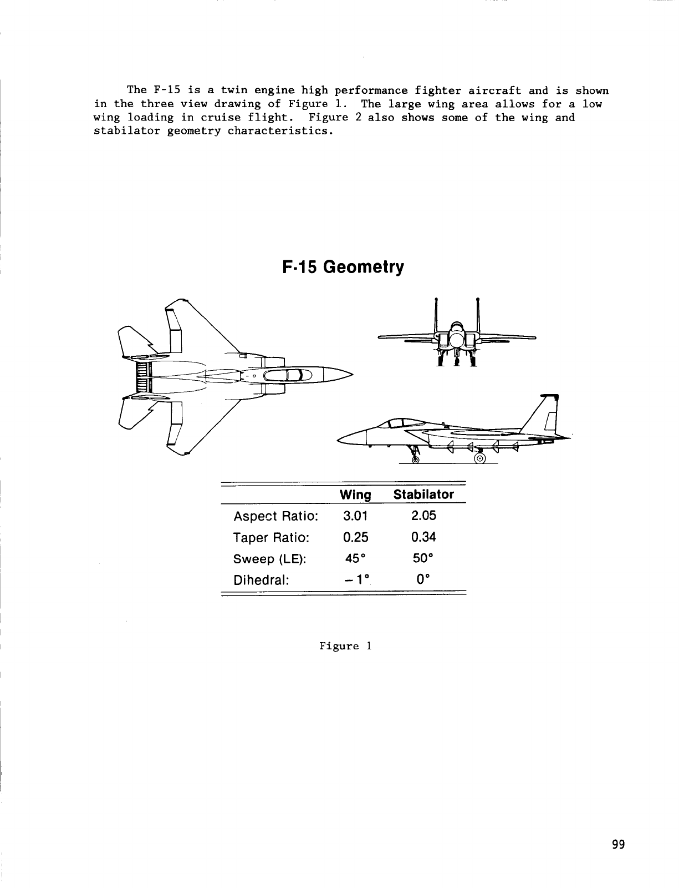
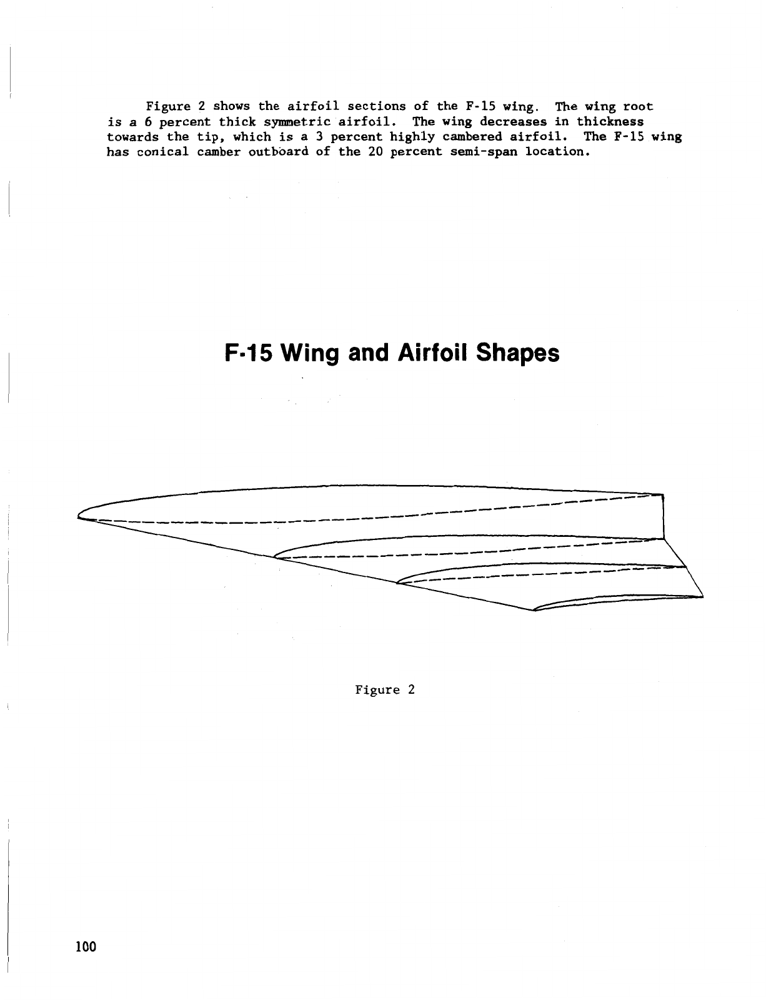

23 October 2026 · Reference study before modeling
Studying the F-15C before building it
Confirmed brief: a realistic single-seat F-15C, built one assembly at a time, tested in the existing lab, with a usable in-game cannon. This is the initial study record. The aircraft and cannon are now implemented; the linked refinement record contains current integration and acceptance status.
250-photo annotated catalog · Completed visual study · Dedicated reference dossier · Current refinement · Aircraft design · Initial search and source log
1. Choose a consistent aircraft configuration
The F-15C is a single-seat production Eagle. The F-15E uses two crew members. The C also has provision for conformal tanks, so their presence alone does not identify an E. These distinctions are documented in the USAF Eagle fact sheet and USAF Strike Eagle fact sheet.
Proposed modeling baseline: a conventional USAF F-15C in gray, with one seat, a clean airframe, and no external tanks in the initial build. Use the museum's F-15C 86-0156 as the main photographic reference for the production shape. Its displayed tanks and livery are reference context, not automatic additions to the model. The museum identifies this particular aircraft and provides a large photographic set. NMUSAF aircraft record and photographs.
NASA's Flight Research Facility aircraft is an extensively modified F-15A. Its general drawings can help establish geometry, but its research equipment cannot be assumed to belong on a production C. NASA aircraft description.
2. Resolve the overall dimensions
| Evidence | Length | Span | Height | How to use it |
|---|---|---|---|---|
| USAF F-15C fact sheet | 63 ft 9 in | 42 ft 9¾ in | 18 ft 5½ in | Primary overall authoring envelope. Converted and rounded: approximately 19.43 × 13.05 × 5.63 m. |
| USAF general Eagle fact sheet | 19.44 m | 13 m | 5.6 m | Broad cross-check; this sheet gives rounded values for several variants. |
| Smithsonian F-15C object record | 19.05 m | 13.157 m | 5.664 m | Retain as the museum's object record. The measurement method and configuration are unspecified here. Do not average these values with the USAF specifications. |
The converted feet-and-inches values are authoring targets, not evidence of millimeter accuracy. Overall height must be assessed in a declared gear and ground configuration. Local body widths and section stations still require tracing and cross-view checks.
3. The wing and tail have specific geometry
A McDonnell Aircraft paper hosted by NASA documents the following conventional F-15 reference geometry. It also describes comparison with an early 4.7% wind-tunnel model, so the values guide the baseline; production C photographs remain necessary for detail. Dale M. Pitt, CAP-TSD Analysis of the F-15 Aircraft, figures 1–3.
| Feature | Documented baseline | Modeling consequence |
|---|---|---|
| Main wing | 45° leading-edge sweep; −1° dihedral; 0.25 taper ratio; aspect ratio 3.01 | Trace the compound outline and slight anhedral. Preserve the distinction between theoretical reference chords and exposed geometry. |
| Wing section | Approximately 6% thickness at the root and 3% at the tip; outboard conical camber | Build a thin lifting surface with changing sections. Exact section coordinates remain to be established. |
| Stabilator | 50° leading-edge sweep; 0° dihedral; 0.34 taper ratio | Author the complete moving tail surface and its pivot, rather than a fixed tail with a separate elevator. |


NASA's TM-X-62360 provides another public model study, including geometry tables, test conditions, and all-moving stabilators. Its publication date is July 1974; the identifier is not its publication year. Values extracted from its scanned tables must be checked against the original page before becoming locked dimensions.
4. What the production photographs require
The observations below come from visually inspecting the museum's original photographs of the same aircraft. They establish visible shape, not hidden section dimensions.
| Area | Observed feature | Reference inspected | Build implication |
|---|---|---|---|
| Nose and cockpit | Long tapered radome, curved forward fuselage, separate windscreen and raised canopy; the forward body is much narrower than the intake shoulders. | Side view · Ken LaRock | Review the nose centerline and canopy silhouette before adding panel detail. |
| Intake mouths | Tall angular openings with inclined lips, substantial corner radii, visible ramp surfaces, and depth behind the entrance. | Low forward view · Ken LaRock | Build separate lips, ramps, and ducts with correct shadows and attachment to the shoulders. |
| Front section | Rounded center fuselage between widely spaced intake openings; thin wings; narrow wheel track; fin-top details differ between sides. | Near head-on · Ty Greenlees | Use a front-view check as well as the side view. Verify the fin details separately before mirroring them. |
| Aft body | Two distinct engine housings, metal aft surfaces, deep circular exhausts with exposed outer hardware, and stabilators rooted alongside the engines. | Rear quarter · Ty Greenlees | Preserve the twin-engine volumes and the interfaces around the moving tail surfaces. |
| Wing root and canopy | Visible root openings, fairings, panel transitions, clear glazing, and framing provide scale cues beyond the silhouette. | Forward side · Ty Greenlees | Place details from the chosen reference aircraft and separate visual asymmetry from geometric symmetry. |


The source photographs remain linked to their official host. Retain photographer credit when displaying them. They are visual references rather than scaled orthographic measurements.
5. Mechanisms must be laid out before finishing the skin
The F-15's side-mounted inlets use three horizontal ramps and vary capture area by rotating around a transverse hinge at the lower cowl lip. Ramps and bypass doors are automatically scheduled. Model the visible mechanism and its attachment; the game does not need to reproduce the real inlet controller. NASA TP-2411, apparatus description and figure 3.
Each stabilator rotates as a complete surface; NASA's model test also exercised differential stabilator deflection. NASA TM-X-62360. The F100 has a variable-area convergent-divergent nozzle, giving a basis for separate nozzle geometry. NASA TP-1782.
Required mechanisms in the build: canopy and frame; inlet lips and ramps; flaps and ailerons; stabilators; rudders; dorsal speedbrake; landing gear and doors; and exhaust assemblies. Exact pivots, gear-door timing, speedbrake travel, and small actuator dimensions still need mechanism-specific references before those stages. The first fuselage stage reserves these spaces and attachment datums.
6. A usable cannon is part of the game scope
The USAF describes one internal M61A1 20-mm cannon with 940 rounds and identifies the gun in the right wing root. That sets the visible muzzle location and a possible initial ammunition capacity. USAF Eagle fact sheet.
Proposed game behavior: hold J or the touch FIRE button to fire. Include muzzle flash at the modeled muzzle, sound, visible shot effects, ammunition consumption, impact feedback, and practice targets that register hits. Space keeps its existing brake function. Ballistics, firing cadence, damage, and effects are game parameters until separately sourced and tuned.
| Current repository evidence | Implementation consequence |
|---|---|
| Aircraft IDs and loader currently cover Finch, Peregrine, Aurelia, Stormbird, and Heron. | Add F-15C as a new aircraft with its own geometry, mass, propulsion, contact model, systems, and references. |
| Game input already uses Space/B for brakes, F for flaps, G for gear, and C for camera. | Use a distinct fire action. Release it on blur, pause, menu transitions, and touch cancellation. |
Graph and source-text searches found no cannon, ammunition, muzzle, or projectile implementation in the current src/, lab/, and tests/. | Build a small combat module. Reuse relevant world collision primitives after verifying their geometry and units. |
| Touch controls already separate flight, brake, gear, and flap controls. | Add a fire button and an ammunition readout without disrupting steering or configuration inputs. |
Acceptance checks must demonstrate shots hitting a target, ammunition reaching zero, immediate release behavior, no firing while paused or in menus, and correct muzzle placement as the aircraft turns. Sweep the path between projectile positions to prevent fast shots passing through thin targets. Bound projectile lifetime and reuse effects. Test input and ammunition behavior across frame rates and confirm old replay data remains readable.
7. What the existing lab can establish
The current wing solver takes spanwise leading-edge position, chord, height, incidence, and zero-lift angle. It models linear attached flow and accepts 5–80 m/s, density 0.5–1.4 kg/m³, and −8° to +8° angle of attack. It does not accept the complete CAD surface as a CFD boundary.
Measure the new CAD wing and retain its geometry revision. Declare the centerline continuation used for reference area, because the fuselage hides part of the theoretical wing. A scanned early-model area or airfoil name must not silently become a verified production-C measurement.
- For each assembly: check saved geometry validity, dimensions, symmetry where appropriate, and exact attachment paths.
- For each mechanism: sample its declared travel, confirm attachment through modeled pivots, and inspect clearance.
- For the completed wing: run low-speed angle sweeps and the existing 24/48/96/144-panel convergence comparison in lab experiments.
- For a flyable aircraft: verify mass/CG, trim, takeoff, landing, control signs, propulsion, damage behavior, and interaction with the existing fleet.
The linear wing result cannot establish inlet pressure recovery, engine operability, transonic shocks, separated-flow stall, high-angle-of-attack behavior, or full-aircraft performance. The NASA CAP-TSD paper separately examined body and inlet effects, so a wing-only lab result must retain that scope. CAP-TSD paper.
8. Decisions this study changes
- Use the F-15C-specific USAF envelope and preserve the conflicting museum dimensions as separate evidence.
- Author the narrow nose, cockpit, intake shoulders, wing glove, and twin-engine rear body as distinct but connected forms.
- Use the documented thin, swept, slightly anhedral wing as the baseline, with production photographs checking its final outline.
- Reserve the dorsal speedbrake, gear bays, canopy interface, and right-root muzzle before finishing the skin.
- Include the flyable aircraft and usable cannon in the implementation scope.
- Keep local section shapes, exact pivots, minor hardware, and unsupported flight coefficients explicitly marked as approximations.
First modeling deliverable: fuselage and nose, with the cockpit opening and attachment datums. Review side, top, front, and perspective views against these references before proceeding to the intakes.
9. Research coverage and limits
Used both requested services: Exa and Parallel Search. Four Exa search calls requested 20 results; six Parallel Search calls returned 41 entries. After normalizing case, protocol, and trailing slashes, the combined discovery set contained 51 distinct URL candidates. These are screening counts, not 51 fully verified sources. Duplicate fact sheets, unrelated search hits, retailer pages, simulator descriptions, and unverified secondary claims were excluded from the dimensional basis.
Read selected primary source text, visually inspected production F-15C photographs, and rendered and inspected the three saved CAP-TSD figure pages. The CAP-TSD source PDF is saved locally. Other source documents remain linked online where a local retrieval did not complete. No CAD validity, aerodynamic, flight, or cannon test has run for this new aircraft because it does not exist yet.
Search access date: 23 October 2026. Original source publication dates and configurations remain distinct from search/index dates. The source log records the discovery set, selected evidence, and outstanding references.